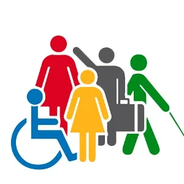
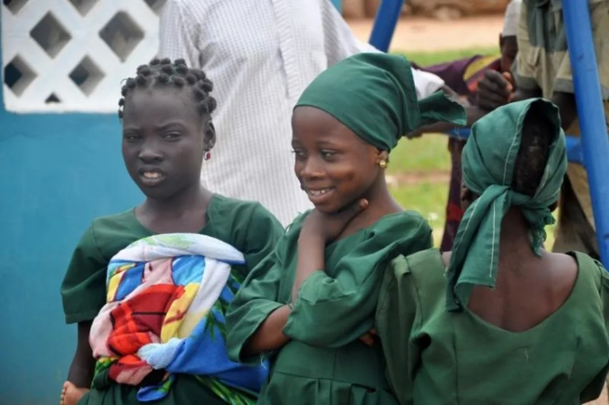
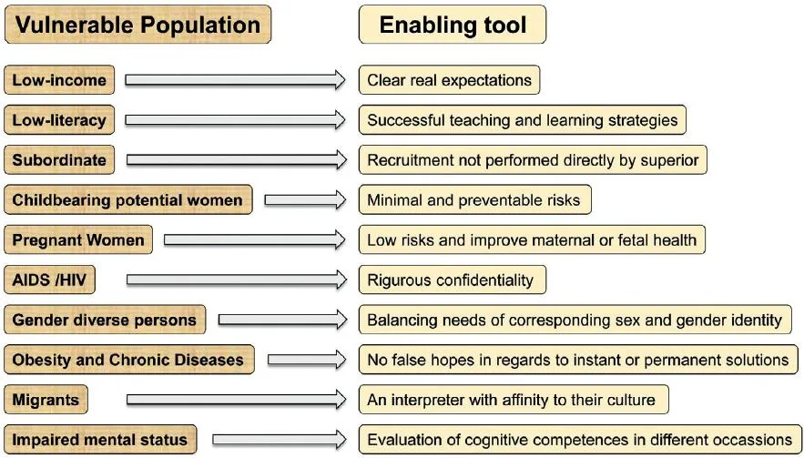
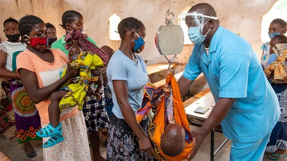
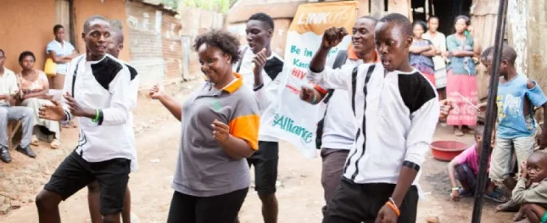

Expanded Nursing Uganda Explanation
Vulnerable groups should be reviewed through safe maternal and newborn assessment, early recognition of danger signs, respectful communication and timely referral. Connect the definition to vital signs, bleeding, fetal or newborn wellbeing, patient education and local protocol requirements.
01 VULNERABLE GROUPS
These groups may face additional social, economic, or cultural factors that contribute to their vulnerability.
02 Examples of Vulnerable Groups
1. Adolescent Girls in Low-Income Communities :
- Girls living in poor areas may face challenges related to limited access to education, healthcare, and economic opportunities, which can impact their reproductive health choices.
2. Rural Adolescents :
- Adolescents residing in rural or remote areas may experience difficulties in accessing healthcare facilities, educational resources, and information on reproductive health.
3. Sexual and Gender Minorities :
- Sexual and gender minorities may encounter stigma, discrimination, and lack of awareness or understanding of their specific reproductive health needs.
4. Adolescents with Disabilities :
- Adolescents with physical or intellectual disabilities may encounter barriers in accessing reproductive health services. Healthcare facilities and information may not always be adapted to their needs.
5. Adolescents in Conflict or Emergency Settings :
- Adolescents living in areas affected by conflict, displacement, or emergencies face unique challenges, including disrupted healthcare services, increased vulnerability to sexual violence, and limited access to resources.
6 . Migrant or Displaced Adolescents :
- Adolescents who are migrants or internally displaced may face challenges related to changing environments, language barriers, and limited access to stable healthcare services.
7. Adolescent Mothers :
- Young mothers face distinct challenges, including early pregnancies, potential social stigma, and difficulties in balancing their own health needs with those of their children.
8 . Adolescents Engaged in High-Risk Behaviors :
- Adolescents engaging in risky behaviours, such as substance abuse or unsafe sexual practices, may require targeted interventions to address their specific reproductive health needs.
9. Adolescents Living with HIV/AIDS:
- Those with HIV/AIDS may face stigma, discrimination, and specific challenges related to managing their health condition alongside reproductive health concerns.
03 Challenges faced by Vulnerable groups and there solutions :
- Limited Access to Education : Many vulnerable groups, such as girls in rural areas or individuals from low-income families, face significant barriers to accessing education. This can be due to a lack of resources for schooling, cultural biases against female education, or the need to work to support their families.
- Economic Challenges: Vulnerable groups often face economic challenges that make it difficult for them to afford healthcare, education, and other essential services. They may have limited financial resources, be dependent on external support, or lack the skills and opportunities to earn a stable income.
- Limited Healthcare Access : Vulnerable groups may face limited access to healthcare services due to geographical barriers, lack of transportation options, or cultural barriers. They may also experience discrimination or stigma from healthcare providers, which can further limit their access to care.
- Challenges in Accessing Educational Resources : Vulnerable groups may face challenges in accessing educational resources, such as textbooks, computers, and internet connectivity. This can make it difficult for them to succeed in school and pursue higher education.
- Lack of Information on Reproductive Health : Many vulnerable groups lack access to accurate information about reproductive health. This can be due to cultural taboos, stigma, or a lack of comprehensive sex education. As a result, they may be unaware of their reproductive rights, contraceptive options, and the importance of reproductive healthcare.
- Stigma and Discrimination : Vulnerable groups often face stigma and discrimination from society and healthcare providers. This can lead to social isolation, fear of judgement, and difficulty accessing essential services.
- Specific Reproductive Health Needs : Some vulnerable groups, such as minority individuals, may have specific reproductive health needs that are not adequately addressed by common healthcare services. They may face discrimination, lack of access to inclusive care, and limited awareness of their unique health needs.
- Inclusive and Culturally Competent Services : Many healthcare providers lack the sensitivity and cultural competence necessary to provide inclusive and respectful care to vulnerable groups. This can lead to discrimination, miscommunication, and inadequate care.
04 Solutions:
- Community Education Programs : Community education programs can raise awareness about the importance of female education, advocate for scholarships and financial aid, and challenge cultural biases against education.
- Economic Empowerment Initiatives: Economic empowerment initiatives can help vulnerable groups gain financial independence and improve their economic well-being. This can include skill-building programs, microfinance projects, and access to financial services.
- Reproductive Health Workshops : Reproductive health workshops can provide vulnerable groups with accurate information about contraceptive options, empower them to make informed decisions about their reproductive health, and connect them with healthcare services.
- Mobile Health Clinics: Mobile health clinics can provide healthcare services to remote and underserved communities, reducing geographical barriers to care. They can also offer educational outreach programs to raise awareness about reproductive health and other health issues.
- Investment in Rural Education: Investing in rural education can help to improve access to schools, provide scholarships and resources, and ensure that all children have the opportunity to receive a quality education.
- Community Health Workers : Community health workers can be trained to provide basic healthcare services, educate their communities about health issues, and facilitate access to healthcare services for vulnerable groups.
- Training for Healthcare Providers: Training healthcare providers on minority issues and cultural competence can help to improve the quality of care for vulnerable groups. This training can help providers to understand the unique needs of these groups and provide inclusive and respectful care.
- Specialized minority Clinics : Specialized minority clinics can provide comprehensive healthcare services that are specific to the unique needs of individuals. These clinics can offer confidential and affirming care, as well as support services and resources.
- Community Awareness Programs : Community awareness programs can help to challenge stigma and discrimination against vulnerable groups. These programs can educate the public about the importance of inclusivity, diversity, and respect for all people.
05 Roles of Health Workers for Vulnerable Groups in Adolescent Reproductive Health:
Education and Counseling:
- Provide comprehensive reproductive health education to vulnerable groups.
- Offer counseling services to address their specific needs and concerns.
Access Facilitation:
- Assist in overcoming barriers to education by connecting vulnerable adolescents with scholarship programs and educational resources.
- Facilitate access to healthcare services by identifying and addressing transportation challenges.
Economic Empowerment:
- Collaborate with local initiatives to empower vulnerable groups economically.
- Advocate for and support vocational training programs to enhance skills and employability.
Cultural Sensitivity:
- Undergo training on cultural competence to understand and respect the diverse backgrounds of vulnerable adolescents.
- Foster an inclusive and non-judgmental environment for discussions about reproductive health.
Community Engagement:
- Engage with communities to raise awareness about the importance of education and healthcare for vulnerable groups.
- Organize outreach programs to provide healthcare services directly within communities.
Mobile Health Services:
- Implement or support mobile health clinics to reach remote areas where vulnerable groups may face challenges in accessing services.
- Conduct regular health check-ups and educational sessions in underserved communities.
Confidential and Inclusive Care:
- Ensure that healthcare services maintain confidentiality and are inclusive of all genders and sexual orientations.
- Advocate for policies that protect the privacy and rights of vulnerable adolescents.
Collaboration with NGOs and Community Leaders:
- Collaborate with non-governmental organizations working with vulnerable groups.
- Engage with community leaders to create supportive environments for education and healthcare.
Training and Sensitization:
- Provide ongoing training for healthcare workers on the unique needs and challenges faced by vulnerable groups.
- Conduct sensitization programs to reduce stigma and discrimination within healthcare facilities.
Empowerment Programs:
- Facilitate programs that empower vulnerable adolescents to make informed decisions about their reproductive health.
- Support initiatives that focus on building self-esteem and resilience.
Advocacy for Policy Changes:
- Advocate for policy changes at local and national levels to address the systemic challenges faced by vulnerable groups.
- Work towards creating an enabling policy environment for inclusive education and healthcare.
06 Community Involvement in Adolescent Reproductive Health:
Community involvement is important in promoting the reproductive health of adolescents. Engaging communities creates a supportive environment, addresses cultural sensitivities, and helps in the successful implementation of reproductive health programs.
07 Roles of the Community in Adolescent Reproductive Health:
Advocacy and Awareness: Communities play an important role in advocating for adolescent reproductive health issues and raising awareness. This can be achieved through various initiatives, such as:
- Town Hall Meetings : Community leaders can organize town hall meetings to discuss the importance of reproductive health education for adolescents. These meetings provide a platform for open dialogue, where community members can express their concerns and suggestions.
- Media Campaigns : Communities can collaborate with local media outlets to launch awareness campaigns. These campaigns can utilize various channels, such as radio, television, and social media, to disseminate accurate information about reproductive health.
Education and Information Dissemination: Communities are responsible for educating adolescents about reproductive health and disseminating accurate information. This can be done through:
- School-Based Programs : Parent-teacher associations can work with schools to add comprehensive reproductive health education into the curriculum. These programs should address topics such as puberty, contraception, and sexually transmitted infections (STIs).
- Community Workshops: Community organizations can conduct workshops on reproductive health for both parents and adolescents. These workshops can provide a safe space for participants to ask questions and receive accurate information.
Creating Supportive Environments: The community should foster an environment where adolescents feel supported and comfortable discussing reproductive health. This can be achieved through:
- Peer Support Groups : Establishing peer support groups within the community can provide a platform for adolescents to share their experiences and challenges related to reproductive health. These groups can also serve as a source of emotional support.
- Community meetings : Creating community forums where adolescents can openly discuss reproductive health topics can help break down stigma and encourage open communication.
Promoting Gender Equality: Communities should work towards promoting gender equality to ensure equal access to reproductive health information and services. This can be done through:
- Gender Sensitization Programs : Conducting gender sensitization programs for community members can help challenge traditional gender roles and promote equal opportunities for both girls and boys.
- Empowering Girls : Initiatives that empower girls and young women, such as access to education and economic opportunities, can contribute to improved reproductive health outcomes.
Community-Led Interventions: Communities can initiate and lead projects and interventions aimed at addressing adolescent reproductive health issues. This can include:
- Health Fairs : Local community groups can organize health fairs focused on adolescent reproductive health. These fairs can provide information on available services, conduct screenings, and distribute educational materials.
- Community-Based Counselling: Establishing counselling services within the community can provide adolescents with access to confidential support and guidance on reproductive health matters.
Parental Involvement: Encouraging parents to actively participate in discussions and activities related to adolescent reproductive health. This can be done through:
- Parent-Teacher Associations(PTA’s) : Parent-teacher associations can collaborate with schools to include reproductive health education in the curriculum. They can also organize workshops and events for parents to learn more about adolescent reproductive health.
- Family Counselling : Providing family counselling services can help parents and adolescents communicate effectively about reproductive health topics.
Peer Education: Empowering older adolescents to educate and guide their peers on reproductive health matters can be an effective approach. This can be done through:
- Peer-Led Workshops : Training older students to conduct peer-led workshops on reproductive health within schools can provide a relatable and non-judgmental environment for learning.
- Peer Support Networks : Establishing peer support networks can connect adolescents with older peers who can provide guidance and support on reproductive health issues.
Promoting Open Communication: Creating an environment that encourages open communication between parents, adolescents, and community members is essential. This can be achieved through:
- Community Forums: Organizing community forums where parents and adolescents can discuss reproductive health topics openly can help break down stigma and facilitate understanding.
- School-Based Programs : Schools can implement programs that encourage open communication between students and teachers on reproductive health matters.
Crisis Intervention and Support: The community should provide support systems for adolescents facing reproductive health crises. This can include:
- Counselling Services : Establishing counselling services or toll free numbers within the community can provide adolescents with access to confidential support and guidance during times of crisis.
- Crisis Pregnancy Centers: Crisis pregnancy centres can provide support and resources to adolescents facing unplanned pregnancies.
Addressing Stigma and Taboos: Communities need to challenge and dispel stigma and taboos associated with reproductive health topics. This can be done through:
- Awareness Campaigns : Organizing awareness campaigns to break down cultural barriers and reduce stigma surrounding reproductive health can help create a more supportive environment for adolescents.
- Community Dialogues : Facilitating community dialogues on reproductive health topics can help challenge misconceptions and promote understanding.
Community Health Workers: Training and deploying community health workers to serve as resources for adolescent reproductive health can be an effective strategy. This can include:
- Door-to-Door Visits: Community health workers can conduct door-to-door visits to provide information on available reproductive health services and address common misconceptions.
- Health Education Sessions: Community health workers can conduct health education sessions in schools and community centers to provide accurate information about reproductive health.
Resource Mobilization: Mobilizing local resources to support programs and initiatives focused on adolescent reproductive health is essential. This can be done through:
- Local Businesses : Local businesses can sponsor events or donate resources for reproductive health awareness campaigns.
- Community Fundraising: Community fundraising efforts can be organized to raise funds for reproductive health programs and initiatives.
Monitoring and Evaluation: Communities should actively participate in monitoring and evaluating the effectiveness of reproductive health programs. This can include:
- Community Committees : Establishing community committees to assess the impact of adolescent reproductive health initiatives can ensure that programs are meeting the needs of the community.
- Data Collection : Collecting data on reproductive health indicators, such as adolescent pregnancy rates and STI prevalence, can help communities track progress and identify areas for improvement.
Advocating for Policy Changes: Engaging in advocacy efforts to influence policies that support adolescent reproductive health is crucial. This can include:
- Policy Advocacy Campaigns: Community members can participate in campaigns to advocate for comprehensive sex education in schools and access to affordable reproductive health services.
- Policy Dialogues : Participating in policy dialogues with local and national policymakers can help shape policies that support adolescent reproductive health.
Community-Based Research: Conducting research within the community to understand specific reproductive health needs and challenges can inform program development and policy advocacy. This can include:
- Surveys : Collaborating with local universities or research institutions to conduct surveys on adolescent reproductive health knowledge and behaviors can provide valuable insights.
- Focus Group Discussions : Conducting focus group discussions with adolescents and community members can help identify specific reproductive health concerns and priorities.
08 Nursing Uganda Clinical Lens
Use Vulnerable groups as a practical nursing topic, not only a memorized definition. Start with normal structure and function, then connect it to assessment findings and disease.
- What to understand first: define vulnerable groups, identify the normal or expected pattern, then explain what changes when the patient is unwell.
- Why it matters in care: the nurse must recognize risk early, explain findings clearly, document accurately and know when to escalate.
- How to revise it: connect each point to assessment, nursing diagnosis or care problem, intervention, rationale and evaluation.
09 Assessment Guide
- Relevant inspection, palpation, movement, auscultation, vital signs or neurological checks.
- Normal findings, abnormal findings and what each abnormality may indicate.
- Patient history, risk factors and how the body system affects other systems.
10 Nursing Priorities, Rationales and Outcomes
- Use anatomy to explain symptoms and guide focused assessment.
- Recognize findings that need urgent escalation.
- Teach the patient using simple body-system language.
The rationale for these priorities is patient safety: nursing actions should prevent deterioration, reduce discomfort, support recovery and create clear evidence for the next caregiver.
- Expected outcome: The learner can explain normal function, identify abnormal signs and connect them to nursing action.
11 Patient Teaching and Revision Check
- Explain vulnerable groups in simple language the patient or caregiver can repeat back.
- Teach warning signs, medicine or follow-up instructions, hygiene or lifestyle points where relevant.
- For exams, prepare a short answer using: definition, causes or risk factors, signs, assessment, management, complications and prevention.
- For ward practice, document baseline findings, actions taken, patient response and the plan for review.
Illustrations and Diagrams (5)





Related Video Lectures
Watch nursing lecture videos on YouTube for this topic. Opens in a new tab.
Watch on YouTubeExternal link: YouTube may use its own cookies and terms. Nursing Uganda is not affiliated with YouTube.